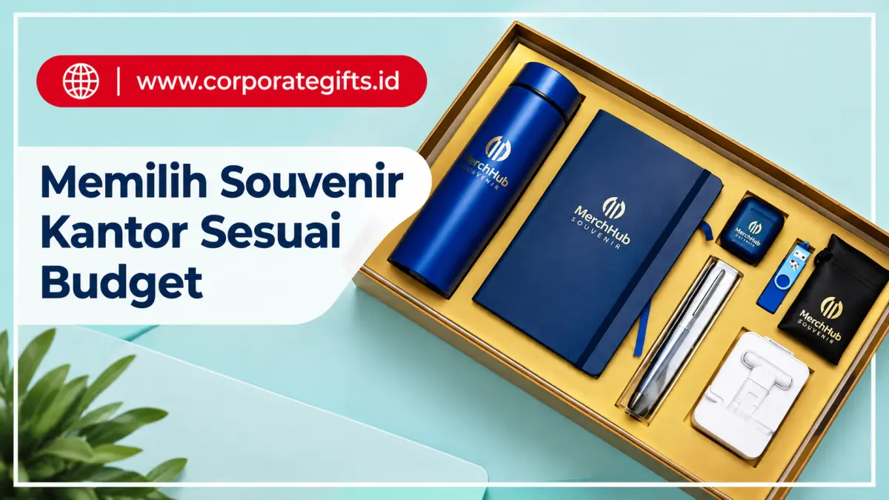

Corporate Gifts ID - Cara memilih souvenir kantor sesuai budget adalah dengan menentukan lebih dulu tujuan pemberiannya, menetapkan kisaran anggaran per unit, memilih produk fungsional yang sering digunakan, lalu bekerja sama dengan vendor souvenir terpercaya agar kualitas tetap konsisten. Souvenir kantor bukan sekadar hadiah, melainkan representasi profesionalisme dan bagian dari strategi corporate branding yang mencerminkan identitas perusahaan. Melalui souvenir yang tepat, sebuah brand dapat meninggalkan kesan mendalam pada klien, karyawan, maupun mitra bisnis tanpa harus membebani budget marketing perusahaan.
Poin Kunci Memilih Souvenir Sesuai Budget:
- Segmentasi Penerima Terarah: Membagi alokasi antara promosi massal (kategori hemat) dan mitra VIP (kategori eksklusif) untuk efisiensi dana maksimal.
- Prioritaskan Kegunaan Harian: Barang yang sering digunakan seperti tumbler vacuum dan notebook kerja menghasilkan ROI branding jauh lebih tinggi dibanding barang pajangan.
- Sentuhan Personalisasi Elegan: Mengaplikasikan grafir laser rapi atau cetak UV presisi memberikan kesan mewah tanpa perlu menambah biaya bahan yang mahal.
- Kerja Sama Pengadaan B2B: Memanfaatkan volume pesanan grosir bersama vendor terpercaya untuk mendapatkan harga terbaik dan garansi kualitas resmi.
Tantangan terbesar bagi tim purchasing dan marketing biasanya muncul dari sisi anggaran, yaitu bagaimana memilih souvenir kantor premium yang tetap terlihat eksklusif tanpa membengkakkan biaya operasional. Artikel ini membahas strategi praktis, tips, hingga rekomendasi produk agar perusahaan dapat menyeimbangkan biaya dan kualitas secara optimal.
Mengapa Manajemen Budget Penting dalam Souvenir Kantor
Banyak perusahaan tergoda memilih barang murah demi menekan biaya pengeluaran. Sayangnya, langkah ini sering berbalik merugikan karena memberikan kesan murahan pada brand dan produk mudah rusak dalam hitungan hari. Itulah sebabnya manajemen anggaran menjadi faktor krusial sebelum menentukan jenis souvenir yang akan dibagikan.
1. Kontrol Biaya Kampanye Branding
Souvenir kantor umumnya dibagikan dalam jumlah besar, baik untuk event promosi, seminar, maupun pertemuan bisnis tahunan. Harga per unit yang tidak terkontrol atau tidak dipatok batas atasnya dapat menggandakan total biaya kampanye secara keseluruhan secara tidak terduga.
2. Konsistensi Kualitas Produk
Souvenir adalah bagian tak terpisahkan dari merchandise branding perusahaan. Meski biaya ditekan secara efisien, standar mutu tidak boleh dikorbankan, karena produk yang ringkih atau mudah patah justru dapat merusak reputasi profesional bisnis di mata penerimanya.
3. Efektivitas Jangka Panjang dan Nilai ROI
Souvenir fungsional yang tahan lama, seperti tumbler stainless steel, power bank, atau corporate gift set, memberikan paparan visual brand secara berulang kali setiap hari. Artinya, return on investment (ROI) promosi dari souvenir tersebut akan semakin tinggi seiring masa pemakaian barang.

Executive gift set dan produk fungsional meja kerja sebagai pilihan souvenir premium bernilai guna tinggi.
Langkah-Langkah Memilih Souvenir Kantor Sesuai Budget
1. Tentukan Tujuan Pemberian Souvenir
Sebelum berbicara soal angka anggaran, tentukan terlebih dahulu target audiens penerimanya, karena setiap kelompok membutuhkan jenis pendekatan cinderamata yang berbeda:
- Klien dan partner premium: Pilih hadiah perusahaan eksklusif dengan sentuhan personalisasi grafir nama dan kemasan rigid box mewah.
- Karyawan internal: Utamakan barang fungsional yang mendukung produktivitas kerja sehari-hari, seperti smart notebook, pen metal, atau botol minum insulasi.
- Event promosi massal: Pilih barang ekonomis namun tetap estetik dan mencerminkan identitas brand, misalnya tote bag kanvas ramah lingkungan atau lanyard custom.
Dengan memahami profil audiens secara cermat, tim pengadaan dapat mengarahkan pilihan produk yang paling relevan, baik dari segi kegunaan maupun citra yang ingin dibangun di mata publik.
2. Kategorikan Anggaran per Unit (Tiering System)
Menetapkan rentang biaya per unit akan membuat proses seleksi katalog jauh lebih terstruktur dan mudah dievaluasi:
- Rp 25.000 - Rp 50.000 / unit: Tote bag custom kanvas, tumbler standar, stationery pack.
- Rp 50.000 - Rp 150.000 / unit: Notebook kulit sintetis, power bank kapasitas menengah, pouch souvenir bisnis elegan.
- Rp 150.000 - Rp 500.000 / unit: Wireless charger, mini speaker bluetooth, set pena eksekutif berukir logo.
- > Rp 500.000 / unit: Executive gift set premium untuk jajaran direksi, komisaris, atau penghargaan masa kerja khusus.
Sistem pengelompokan anggaran ini membantu manajemen mengontrol pengeluaran marketing korporat secara presisi tanpa ada pos biaya yang bocor.
3. Pilih Produk yang Bernilai Fungsi dan Paparan Brand
Souvenir terbaik adalah barang yang tidak hanya disimpan di laci, melainkan dipakai secara aktif. Semakin sering sebuah cinderamata dibawa bepergian atau diletakkan di atas meja kantor, semakin konsisten logo perusahaan Anda dilihat oleh rekan kerja dan mitra sekitarnya.
Beberapa kategori produk dengan retensi pemakaian tertinggi antara lain:
- Barang elektronik modern: USB flashdisk kartu, wireless fast charger pad, earphone TWS, power bank ramping.
- Perlengkapan hidrasi & gaya hidup: Tumbler vacuum stainless SUS304, mug keramik matte, tote bag kanvas tebal.
- Perlengkapan kerja profesional: Buku agenda kerja kulit, pena metal rollerball berukir laser, card holder kulit sintetis.
4. Gunakan Personalisasi Sederhana
Personalisasi souvenir tidak selalu memerlukan biaya cetak yang tinggi. Penempatan logo minimalis menggunakan teknik sablon presisi, cetak emboss timbul pada sampul kulit, atau grafir laser halus sudah cukup mengubah cinderamata sederhana menjadi merchandise bernilai estetika tinggi tanpa membebani biaya produksi.
5. Bekerja Sama dengan Vendor Terpercaya
Vendor souvenir B2B yang berpengalaman memiliki variasi rantai pasok material yang luas, mulai dari lini produk ekonomis hingga gift set berkelas korporat. Keuntungan bermitra dengan penyedia resmi antara lain:
- Variasi opsi produk yang fleksibel disesuaikan dengan plafon anggaran yang disepakati.
- Jaminan kontrol kualitas (QC) ketat untuk menjaga mutu cetakan dan fungsi produk tetap prima.
- Keringanan harga grosir berskala besar serta kelengkapan dokumen administrasi faktur pajak PPN resmi.
Bermitra dengan vendor terpercaya seperti CorporateGifts.ID merupakan kunci utama tercapainya efisiensi anggaran pengadaan souvenir tanpa risiko kekecewaan pada hasil akhir.
Rekomendasi Souvenir Kantor Berdasarkan Alokasi Budget
Berikut matriks panduan rekomendasi jenis cinderamata kantor berdasarkan kisaran plafon biaya per unit untuk mempermudah penyusunan proposal pengadaan:
| Kisaran Budget | Kategori Souvenir | Rekomendasi Produk | Peruntukan Event |
|---|---|---|---|
| < Rp 50.000 / unit | Entry-Level Promotional | Tote bag kanvas custom, notes memo ringkas, pulpen gel stylus | Seminar massal, diklat kampus, pameran expo publik |
| Rp 50.000 - Rp 150.000 / unit | Mid-Range Professional | Notebook kulit sintetis A5, tumbler vacuum stainless 500ml, pouch serbaguna | Rapat kerja tahunan, workshop internal, gathering staf kantor |
| Rp 150.000 - Rp 300.000 / unit | Corporate Business Tier | Wireless charger pad, power bank fast charging 10.000 mAh, tech organizer | Apresiasi klien korporat, mitra bisnis strategis, penutupan proyek |
| > Rp 300.000 / unit | Executive VIP Gifting | Executive gift set (tumbler + notebook + pen metal), plakat kristal grafir | Jajaran direksi, komisaris, stakeholder VVIP, anniversary kantor |
Tips Hemat Budget Tanpa Mengurangi Kesan Premium
Menghemat anggaran tidak berarti harus mengorbankan estetika. Terapkan empat prinsip cerdas berikut dalam proses pemesanan souvenir perusahaan:
- Pesan dalam Jumlah Besar (Bulk Order): Manfaatkan skala ekonomi pemesanan kuantitas tinggi untuk menekan biaya produksi cetak dan harga bahan baku per unit secara signifikan.
- Pilih Desain Timeless: Gunakan konsep tata letak grafis yang klasik, minimalis, dan elegan agar produk tetap relevan digunakan sepanjang tahun tanpa terkesan cepat ketinggalan zaman.
- Gunakan Kemasan Eksklusif: Meskipun isi cinderamata berada pada kategori menengah, penggunaan hard box bermagnet atau pita satin berlogo dapat seketika menaikkan persepsi nilai estetika di mata penerima.
- Prioritaskan Daya Tahan Material: Memilih bahan yang kokoh (seperti stainless steel SUS304 atau kulit PU berkualitas) menjamin barang awet bertahun-tahun, sehingga masa promosi brand berjalan jauh lebih panjang.
Kesimpulan: Investasi Branding Cerdas untuk Perusahaan
Memilih souvenir kantor premium sesuai budget bukanlah hal yang mustahil jika perusahaan memahami profil penerima, menerapkan segmentasi anggaran yang terukur, serta mempercayakan proses produksi pada vendor yang kredibel. Dengan strategi perencanaan yang matang, setiap rupiah anggaran marketing akan menjelma menjadi sarana branding yang elegan, bermanfaat, dan berkesan mendalam bagi relasi bisnis Anda.
Jelajahi berbagai inspirasi cinderamata kantor dan gift box eksklusif pada katalog resmi CorporateGifts.ID atau diskusikan kebutuhan pengadaan instansi Anda langsung bersama tim spesialis kami.